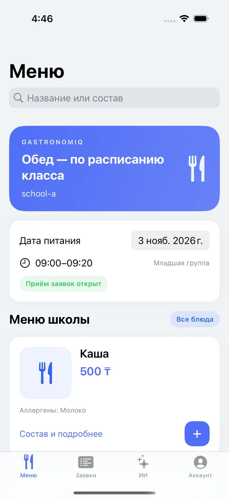

Telegram
@Gastromiqqbot
Telegram ботын ашуМектептегі тамақтану / Жоба таныстырылымы
Отбасы тағам таңдайды, мектеп сыныптың өтінімдерін жинайды, асхана үзіліске ас дайындайды. GastronomIQ осы жұмысты бір жүйеге біріктіреді.
iOSAndroidВебTelegram

01 / Бейнешолу
Жобаның веб-интерфейсінен түсірілген бейне. Алты рөлдің батырмаларды басып, өтінім мен төлем мәртебесін қалай өзгертетінін көріңіз.
02 / Мобильді қолданба
Android қолданбасында ата-ана мәзірді ашады, тағам таңдайды және сақталған өтінімді тексереді.
03 / Мессенджерлер
Мектеп аккаунтын мессенджермен байланыстыру үшін жеке кабинеттегі «Байланыс арналары» бөлімін ашыңыз.
@Gastromiqqbot
Telegram ботын ашуАвтоматты жауап үшін ботты қайта қосу қажет.
WhatsApp чатын ашу04 / Рөлдер мен әрекеттер
Рөлді таңдап, оның экранын және негізгі әрекеттерін қараңыз.
01 / Оқушы
Оқушы тағамды таңдап, сыныбы қай үзілісте тамақтанатынын біледі.
02 / Ата-ана
Ата-ана оқушыны және тамақтану күнін таңдайды. Қосымша үзіліс пен өтінім қабылдау мерзімін көрсетеді.
03 / Мұғалім
Мұғалім сыныптың қатысуын, төлемін және келісім мәртебесін бір кестеден қарайды.
04 / Есепші
Есепші асханаға түскен төлемді тиісті өтініммен салыстырып, расталған соманы белгілейді.
05 / Асхана
Асхана мәзірді жариялайды және әр сыныпқа қанша порция керегін жоспардан көреді.
06 / Әкімші
Әкімші тізілімді жүргізеді, рөлдерді тағайындайды және сыныптардың үзіліс кестесін баптайды.
Экрандар сынақ деректерімен түсірілді. Төлемді асхана қабылдайды, ал GastronomIQ өтінімнің мәртебесін көрсетеді.
05 / Экрандар галереясы
Интерфейсті жақыннан көру үшін скриншотты басыңыз.